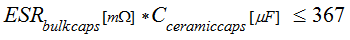
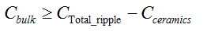

Step 3: Calculate the max. ceramics
This is the third of five steps in the Power Distribution Network (PDN) design. Continue to use the UHC4 / UHC4T impedance calculation spreadsheet to semi-automate your design process.
UHC4 / UHC4T stability requirements
In the previous steps, the required total capacitance and maximum total ESR has been calculated. Now, you need to select an appropriate type of bulk capacitor.
For the sake of stability, this capacitor needs some minimum ESR and a minimum damping factor (D). The minimum damping factor (D) depends on the capacitor's self-resonant frequency fcap according to the table below. Alternatively please check the lines 54 to 58 of the calculation spreadsheet.
When a suitable capacitor was found, insert its values in the cells C46 to C48. The resulting damping factor is displayed in cell C49. Compare it with the D factor in the table below.
If the total capacitance of the found capacitor is smaller than necessary, parallel as many of them as needed. The calculated required quantity is in the cells F46 and F47.
Copy the required quantity and insert it in cell J46. The cells K46 and K47 report the total capacitance and ESR.
| fcap | D |
|---|---|
| <= 100 kHz | > 0.5 |
| About 150 kHz | > 1 |
| 200 ... 250 kHz | > 2.5 |
| > 300 kHz | Do not use |
Maximum ceramics for stability
Next, calculate the maximum value of allowed ceramic capacitors.
The total ESR defines the maximum capacitance of ceramic capacitors. Ceramic capacitors increase the phase lag and therefore decrease stability. A lower total ESR increases stability. The relationship between both variables is defined by this equation:

Calculator cells to use:
| Variable | Calculator cells | |
|---|---|---|
| Required values | Final values | |
| ESRbulk caps | D19 | K47 |
| Cceramic caps | E36 | K49 |
The calculation spreadsheet calculates two values for the maximum allowed ceramic capacitance:
- The maximum value in cell E36 is based on the ESR-value in cell D19.
- The maximum value in cell K49 is based on the ESR-value in cell K47.
When very high currents need fast switching, a lot of ceramic capacitors might be required. To satisfy the stability equation, a lower equivalent series resistance (ESR) is needed. You achieve it by using bulk capacitors with low ESR. For an even lower ESRbulk, use multiple capacitors of the same value.
If above formula is not satisfied, additional bulk capacitors may be the answer.
Minimum bulk C for ripple and stability
Finally, calculate the minimum value of needed bulk capacitors.
The capacitance of ceramic capacitors can be deducted from the already calculated bulk capacitance. Cell E38 shows the required minimum bulk capacitance, while E32 and E36 contain the input values. Cell K50 is the final necessary bulk capacitance with input values K46 and K49.

Calculator Cells to use:
| Variable | Calculator cells | |
|---|---|---|
| Required values | Final values | |
| Cbulk | E38 | K50 |
| CTotal_ripple | E32 | K46 |
| Cceramics | E36 | K49 |
Continue with Step 4: Select PDN capacitors
Functional changes
- Introduced in SmarTest 7.2.1